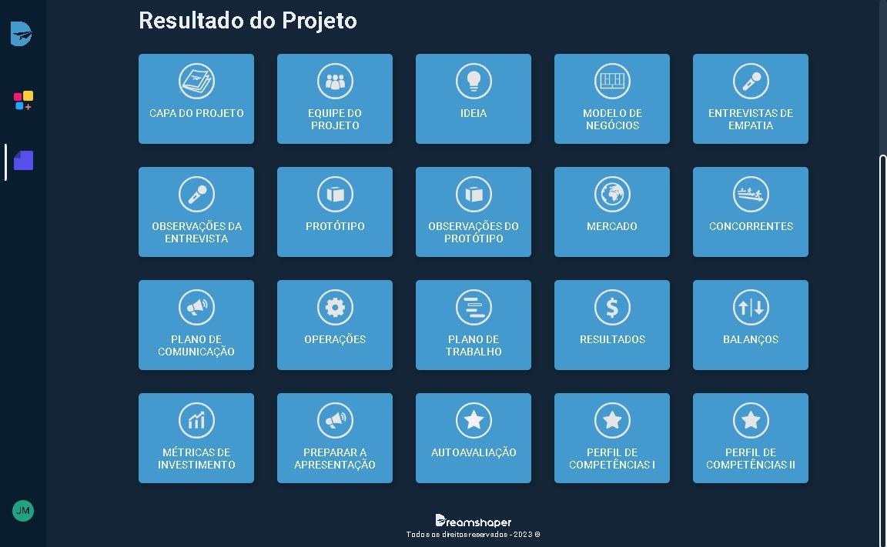

Olá, acreditamos que se você chegou até aqui é porque tem algum interesse em saber como nosso projeto foi feito e como conseguimos alcançar tal resultado. Esta página é exatamente para isso. Vamos explicar passo a passo vários dos nossos desafios e o caminho que percorremos para chegar onde estamos.
Todo o nosso projeto começou com a busca por um problema. Esse problema tinha que ser resolvido ou amenizado com a nossa solução, e também deveria haver alguma inclusão social. Nossa equipe teve várias ideias e sugestões, mas acabamos escolhendo a ideia do Heaways, que tem como objetivo avaliar se alguém tem algum risco de ter alguma doença cardíaca e passar um plano de exercícios baseado no resultado adquirido.
Após decidirmos sobre nosso projeto, utilizamos o DreamShaper para seguir adiante. O DreamShaper é uma ferramenta online de Aprendizagem Baseada em Projeto que guia alunos por um passo a passo de etapas, desafios e atividades, oferecendo-lhes conteúdo didático ao longo do caminho.
Seguindo o passo a passo do DreamShaper, utilizamos o Canva para criar o nosso protótipo inicial do Heaways.
Após o protótipo ser feito, não tínhamos mais motivos para ficar parados. Começamos a transformar o protótipo em um site real utilizando o Visual Studio.

Para conseguir detectar quem tem risco de ter alguma doença cardíaca, precisamos de uma IA (Inteligência Artificial). Para criar a nossa, a equipe teve que buscar várias bases de dados pela internet. Testamos várias bases de dados até encontrar aquela que se adequava melhor ao nosso projeto.
Após encontrarmos a nossa base de dados, tivemos que programar a IA, e fizemos isso utilizando o Python.
Com a IA programada e o site completo, precisávamos integrar nossa IA no nosso site. Para isso, utilizamos o Flask, que é um pequeno framework web escrito em Python.
Com isso, o DreamShaper estava completo, faltando apenas algumas pequenas alterações finais no nosso HTML/CSS.
E foi assim que nossa equipe construiu o site da Heaways! Acabei sem falar várias de nossas dificuldades com nosso projeto, por exemplo, como tivemos que mudar de ideia várias vezes por não encontrar uma base de dados adequada, a dificuldade de encontrar bases de dados interessantes e várias outras dificuldades ao decorrer do semestre.
Espero que tenham gostado e entendido o passo a passo de nossa equipe.